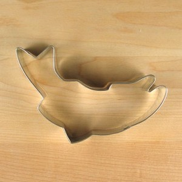
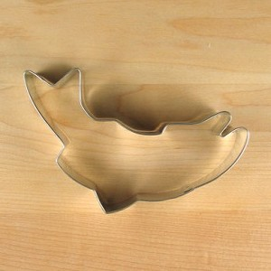

Pat's Salmon Cookies

Sockeye salmon (Oncorhynchus nerka), also called red salmon, kokanee salmon, or blueback salmon, is an anadromous species of salmon found in the Northern Pacific Ocean and rivers discharging into it. This species is a Pacific salmon that is primarily red in hue during spawning. They can grow up to 84 cm (2 ft 9 in) in length and weigh 2.3 to 7 kg (5.1–15.4 lb). Juveniles remain in freshwater until they are ready to migrate to the ocean, over distances of up to 1,600 km (990 mi). Their diet consists primarily of zooplankton. Sockeye salmon are semelparous, dying after they spawn. Some populations, referred to as kokanee, do not migrate to the ocean and live their entire lives in freshwater.
The total registered fisheries harvest of the sockeye in 2010 was some 170,000 tonnes, of which 115,000 tonnes were from the United States and the rest was equally divided between Canada and Russia. This corresponds to some 65 million fish in all, and to some 19% of the harvest of all Pacific salmon species by weight. Commercial fishermen in Alaska net this species using seines and gillnets for fresh or frozen fillet sales and canning. The annual catch can reach 30 million fish in Bristol Bay,Alaska, which is the site of the world's largest sockeye harvest. Sockeye is almost never farmed. A facility in Langley, BC harvested its first salmon in March 2013, and continues to harvest farmed salmon from its inland facility.
 
